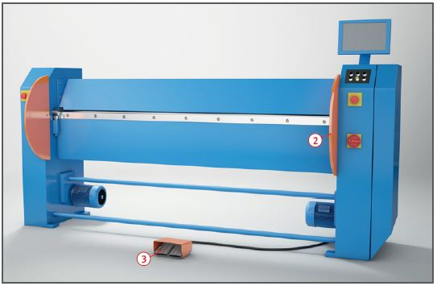

Bei Arbeiten an Abkantmaschinen können Hände oder Finger eingequetscht oder abgeschert werden.

Schutzmaßnahmen
Maschinen standsicher aufstellen.
Bei handbetätigten Maschinen müssen das Gegengewicht und dessen Bahn verkleidet sein .
Ausgleichsgewichte und Federn bei handbetätigten Maschinen so einstellen, dass die Biegewange nicht selbsttätig nach unten fällt.
Bei kraftbetriebenen Abkantmaschinen sind mögliche Quetsch- und Scherstellen zwischen Maschinenständer und Biegewange mit Abweisblechen zu verkleiden .
Schwenkbiegemaschinen mit Arbeitslängen über 2,5 m müssen mindestens zwei leicht erreichbare Not-Halt-Einrichtungen besitzen.
Langabkantmaschinen mit Arbeitslängen über 2,50 m, müssen eine über die gesamte Arbeitslänge angebrachte Schaltstange als eine mit dem Fuß leicht zu betätigende Not-Halt-Einrichtung besitzen .
Für die Bedienung der Maschine mit Fußschalter ist mindestens ein 2-pedaliger Fußschalter mit Not-Halt-Funktion (Öffnen der Oberwange) für die Bedienperson erforderlich .
Die Schließbewegung der Oberwange muss einen Zwischenstopp bei 15 mm oberhalb der maximal zulässigen Blechdicke einlegen.
Bei Mehrpersonenbedienung ist für jeden Biegehelfer ein Fußschalter als Zustimmungsfußschalter erforderlich .
Bei einer Absicherung der Oberwange durch Laserstrahlen können unter bestimmten Voraussetzungen die Schutzmaßnahmen Zwischenstopp und Zustimmungsfußschalter entfallen.
Die Umstellung der Betriebsart von Einpersonen- auf Mehrpersonenbedienung muss über einen abschließbaren Wahlschalter oder eine entsprechende Softwarelösung erfolgen.
Schutzeinrichtungen vor Arbeitsbeginn auf Wirksamkeit überprüfen.
Beim Einsatz von Maschinen älteren Baujahrs die erforderlichen Schutzmaßnahmen entsprechend dem Stand der Technik anpassen.
Betriebsanweisung an der Schwenkbiege- oder Langabkantmaschine aushängen.
Nur unterwiesene Personen mit der Bedienung beauftragen.
Für komplizierte Biegevorgänge Arbeitsabläufe planen und festlegen, um Handverletzungen zu vermeiden.
Prüfungen
Art, Umfang und Fristen erforderlicher Prüfungen festlegen (Gefährdungsbeurteilung) und einhalten.
Ergebnisse der regelmäßigen Prüfungen dokumentieren.
Beschäftigungsbeschränkungen
Jugendliche über 15 Jahre dürfen nur unter Aufsicht eines Fachkundigen und wenn es die Berufsausbildung erfordert an kraftbetriebenen Abkantmaschinen arbeiten.
Jugendliche unter 15 Jahre dürfen nicht an diesen Maschinen beschäftigt werden.
Weitere Informationen: Betriebssicherheitsverordnung
DGUV Information 209-019 Sicherheit bei der Blechverarbeitung
DGUV-Information FB HM-033 Schwenkbiegemaschinen und Langabkantmaschinen: Schutzmaßnahmen